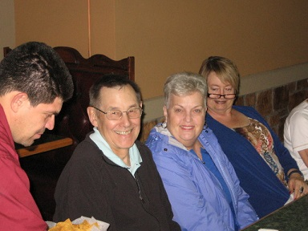
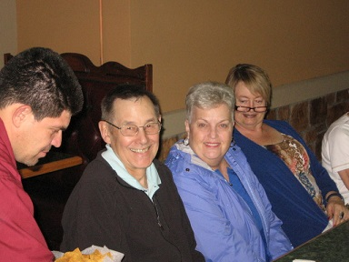

|
Statesboro Pairs Tuesday Eve Session April 11, 2017
Scores after 21 boards Average: 31.5
Pair Pct Score Rank
5 56.35 35.50 1 1 Bryan McClure - Becky Taylor
1 54.76 34.50 2 2 Jean James - Li Li
3 50.79 32.00 3/4 3/4 Mary Miller - Paula Smith
4 50.79 32.00 3/4 3/4 Bill Eller - Eleanor Schneider
Statsboro Pairs Tuesday Eve Session April 4, 2017
Scores after 20 boards Average: 20.0 Section A
Pair Pct Score Rank
1 58.75 23.50 1/3 1/3 Bill Eller - Jane Sack
2 58.75 23.50 1/3 1/3 Ree Bailey - Verna Hickman
5 58.75 23.50 1/3 1/3 Andrea Leonardi - Sue Smith
Statesboro Pairs Tuesday Eve Session March 28, 2017
Scores after 20 boards Average: 8.0
Pair Pct Score Rank
3 53.13 8.50 1/2 1/2 Ree Bailey - Andrea Leonardi
4 53.13 8.50 1/2 1/2 Mary Miller - Paula Smith
Open Pairs March 14, 2017
Scores after 20 boards Average: 20.0
Pair Pct Score Rank O/A
4 71.25 28.50 1 1 Chuck Johnson - Jean Johnson
1 56.25 22.50 2 2 Mary Miller - Virginia Trapnell
2 52.50 21.00 . . Ree Bailey - Verna Hickman
3/7
Pct Score Rank O/A
68.06 24.50 1 1 Andrea Leonardi - Bruce McLean
56.94 20.50 2 2 Li Li - Ree Bailry
|
* * * Some hands * * * Let me know which ones you want to see
10/6 hands
9/29 hands
6/2 hands
6/23 hands
|
Duplicate Basics
Weekly sign-up sheets
Contact numbers with emails
Round ending times.
|
Next game is 4/11/2017
starting at
6:45 on the dot.
Please contact
Chuck if you want to play.
Jack 6 is available at www.jackbridge.com |


 
updated on 4/6/2017

updated on 4/6/2017